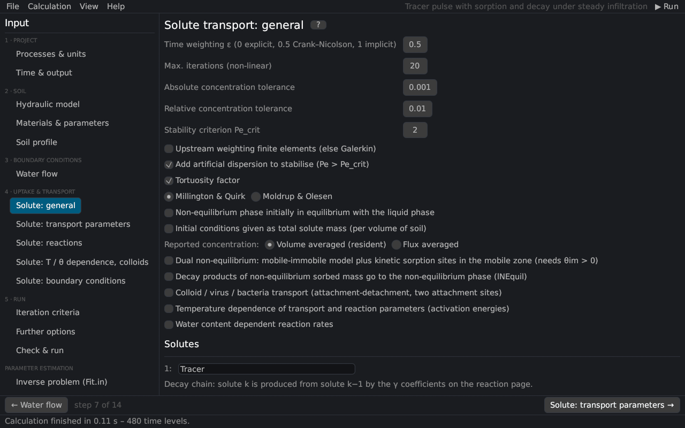

Input (pre-processing) › Solute transport
Solute transport: general
The page corresponds to the General Solute Transport Information dialog of HYDRUS-1D: the numerical scheme, the transport model and the names of the solutes. The equations are in solute transport.


Numerical scheme
| Input | Description |
|---|---|
| Time weighting ε | 0 explicit, 0.5 Crank–Nicolson (default, second order), 1 fully implicit |
| Max. iterations (non-linear) | iterations per time step with non-linear sorption |
| Absolute / relative concentration tolerance | convergence of the iteration with non-linear sorption |
| Stability criterion Pe_crit | Pe·Cr ≤ Pe_crit (default 2) Perrochet and Berod (1993) |
| Upstream weighting | upstream-weighted finite elements Christie et al. (1976) instead of Galerkin; damps oscillations at sharp fronts |
| Add artificial dispersion | with Galerkin elements, artificial dispersion is added where the stability criterion is not met |
See numerical solution and discretization.
Transport model
| Input | Description |
|---|---|
| Tortuosity factor | molecular diffusion reduced by the tortuosity of the liquid and gas phases, after Millington and Quirk (1961) or Moldrup and Olesen Moldrup et al. (1997); Moldrup et al. (2000) |
| Non-equilibrium phase initially in equilibrium | the initial kinetically sorbed or immobile concentrations are in equilibrium with the liquid |
| Initial conditions as total solute mass | the initial concentrations of the profile are total masses per volume of soil |
| Reported concentration | resident (volume-averaged) or flux-averaged concentrations |
| Dual non-equilibrium | mobile–immobile water plus kinetic sorption sites in the mobile zone (needs θim > 0) Šimůnek and van Genuchten (2008) |
| Decay products … to the non-equilibrium phase | the daughter products of the kinetically sorbed mass enter the kinetic sites of the next solute (lNEquil) |
| Colloid / virus / bacteria transport | two kinetic attachment–detachment sites with blocking and straining Schijven and Šimůnek (2002); Bradford et al. (2003) (colloids); optionally with attachment from filtration theory |
| Temperature dependence | Arrhenius dependence of the transport and reaction parameters Stumm and Morgan (1981) |
| Water content dependent reaction rates | after Walker (1974) or trapezoidal functions per reaction (theory) |
Solutes
The names of the solutes (as many as set on Processes & units). Solutes form a decay chain: solute k is produced from solute k−1 by the first-order coefficients γ on the reaction page.
Literature cited in this topic
- Bradford, S. A., J. Šimůnek, M. Bettahar, M. Th. van Genuchten, and S. R. Yates (2003). Modeling colloid attachment, straining, and exclusion in saturated porous media. Environmental Science & Technology 37(10): 2242–2250. doi:10.1021/es025899u
- Christie, I., D. F. Griffiths, A. R. Mitchell, and O. C. Zienkiewicz (1976). Finite element methods for second order differential equations with significant first derivatives. International Journal for Numerical Methods in Engineering 10(6): 1389–1396. doi:10.1002/nme.1620100617
- Millington, R. J., and J. P. Quirk (1961). Permeability of porous solids. Transactions of the Faraday Society 57: 1200–1207. doi:10.1039/TF9615701200
- Moldrup, P., T. Olesen, D. E. Rolston, and T. Yamaguchi (1997). Modeling diffusion and reaction in soils: VII. Predicting gas and ion diffusivity in undisturbed and sieved soils. Soil Science 162(9): 632–640.
- Moldrup, P., T. Olesen, J. Gamst, P. Schjønning, T. Yamaguchi, and D. E. Rolston (2000). Predicting the gas diffusion coefficient in repacked soil: water-induced linear reduction model. Soil Science Society of America Journal 64(5): 1588–1594. doi:10.2136/sssaj2000.6451588x
- Perrochet, P., and D. Berod (1993). Stability of the standard Crank-Nicolson-Galerkin scheme applied to the diffusion-convection equation: some new insights. Water Resources Research 29(9): 3291–3297. doi:10.1029/93WR00927
- Schijven, J. F., and J. Šimůnek (2002). Kinetic modeling of virus transport at the field scale. Journal of Contaminant Hydrology 55(1–2): 113–135. doi:10.1016/S0169-7722(01)00188-7
- Stumm, W., and J. J. Morgan (1981). Aquatic Chemistry. 2nd ed., John Wiley & Sons, New York, 780 pp.
- Walker, A. (1974). A simulation model for prediction of herbicide persistence. Journal of Environmental Quality 3(4): 396–401. doi:10.2134/jeq1974.00472425000300040021x
- Šimůnek, J., and M. Th. van Genuchten (2008). Modeling nonequilibrium flow and transport processes using HYDRUS. Vadose Zone Journal 7(2): 782–797. doi:10.2136/vzj2007.0074
All sources: References.